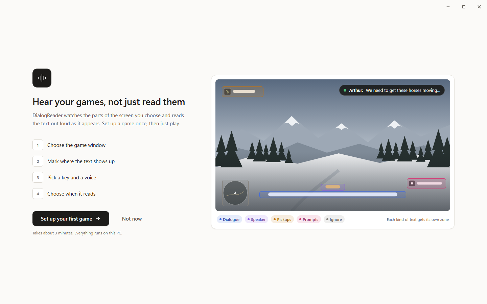
Welcome01-welcome.html
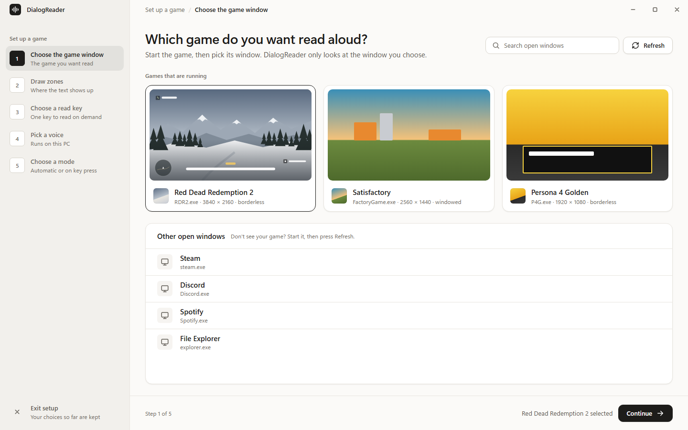
1 · Choose the game window02-pick-window.html
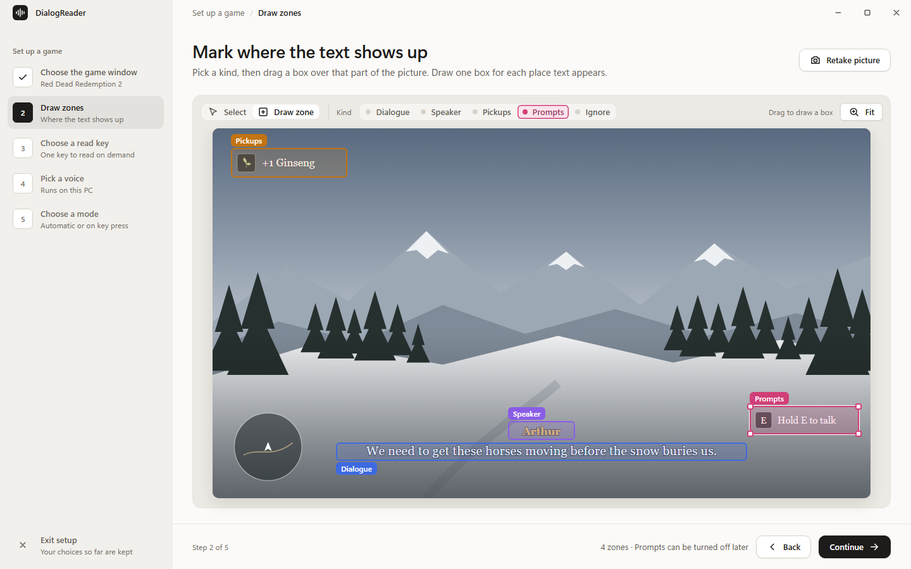
2 · Draw zones03-draw-zones.html
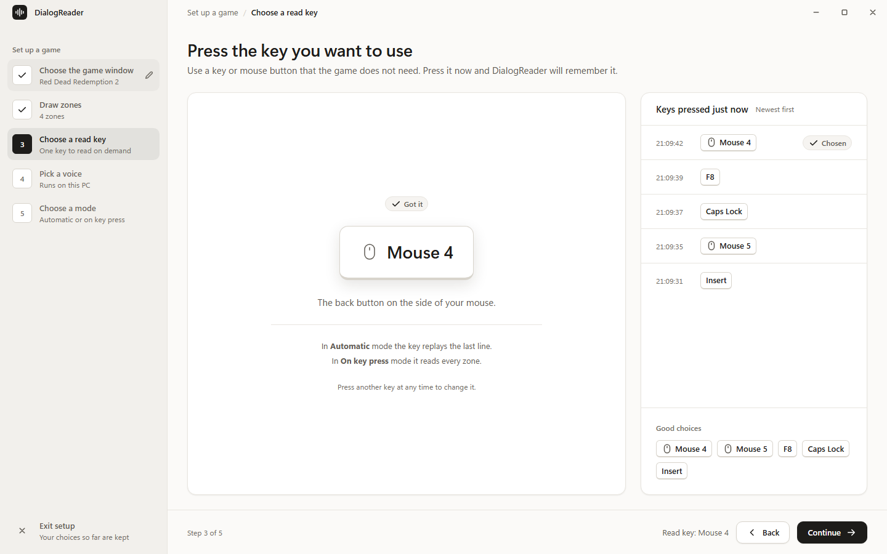
3 · Choose a read key04-read-key.html
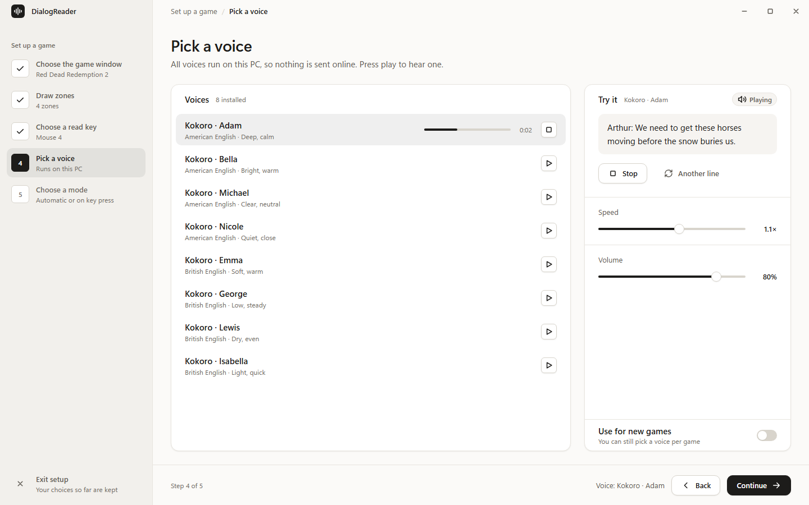
4 · Pick a voice05-voice.html
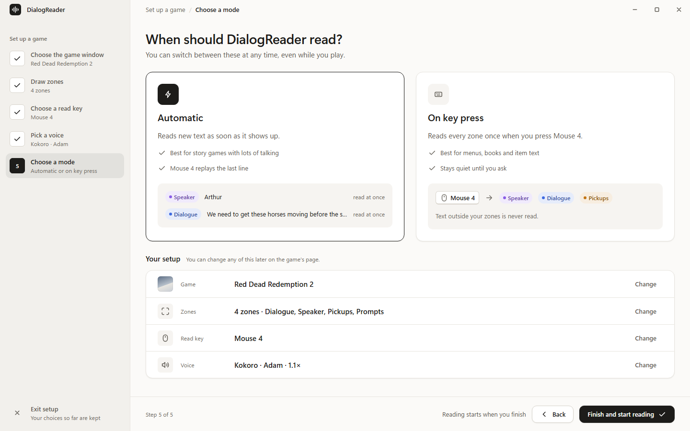
5 · Choose a mode06-mode.html
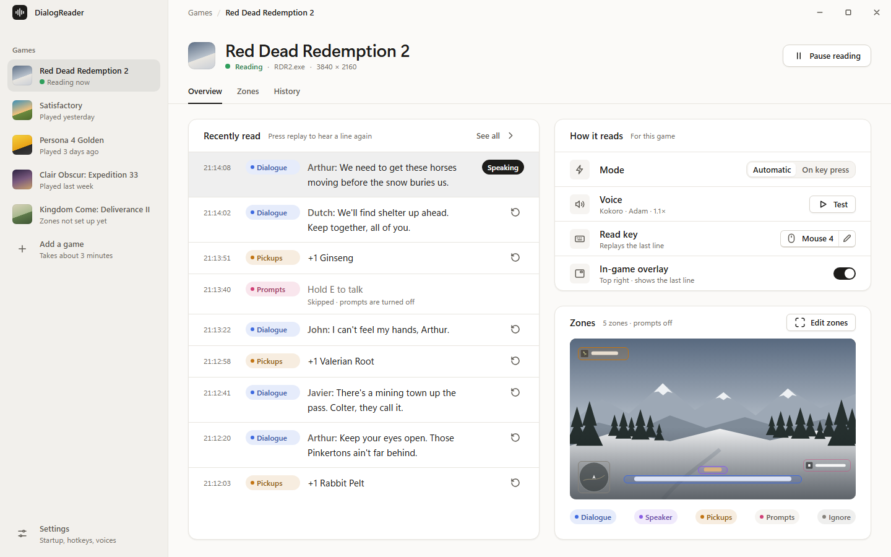
Main window10-main.html
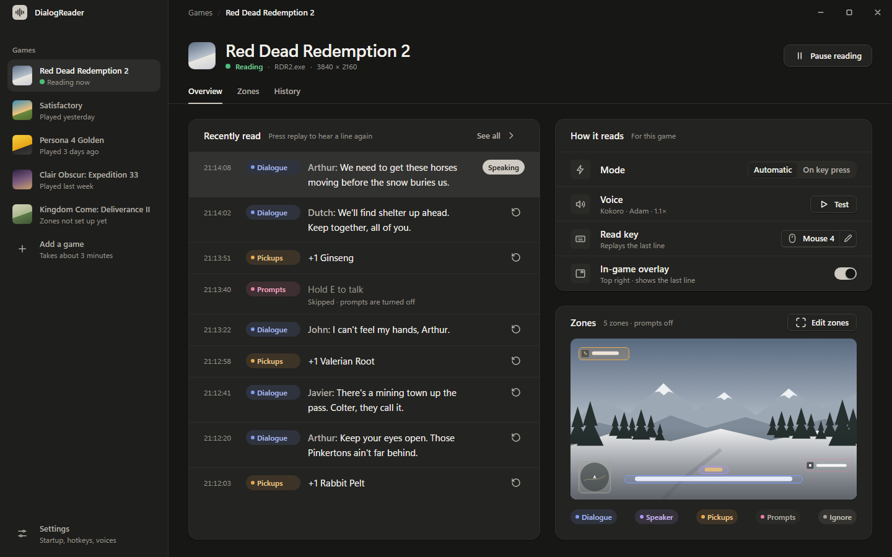
Main window, dark10-main-dark.html
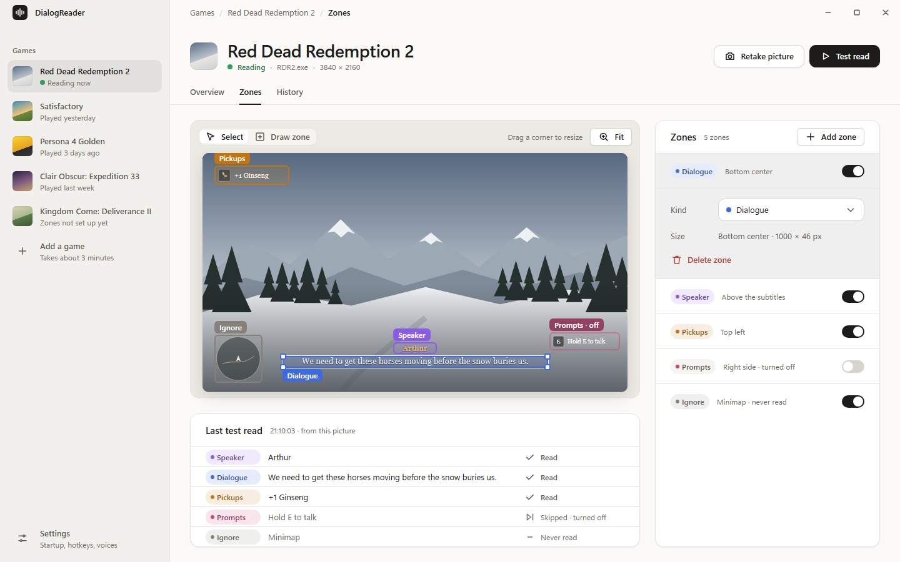
Zone editor11-zones.html
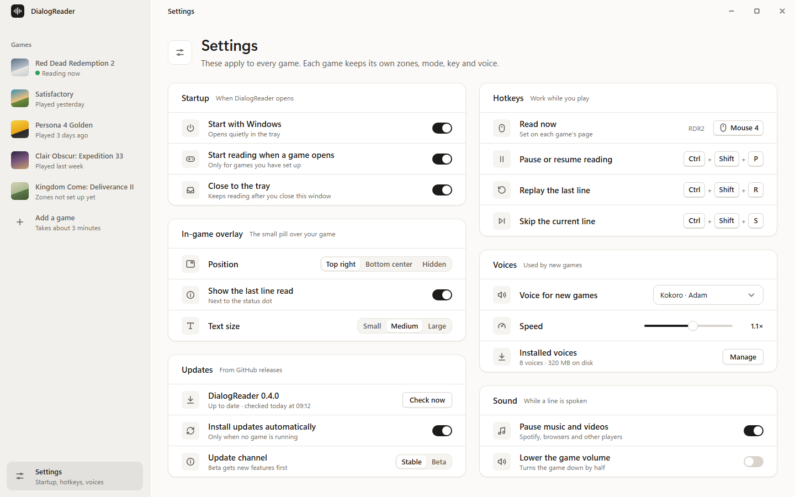
Settings12-settings.html
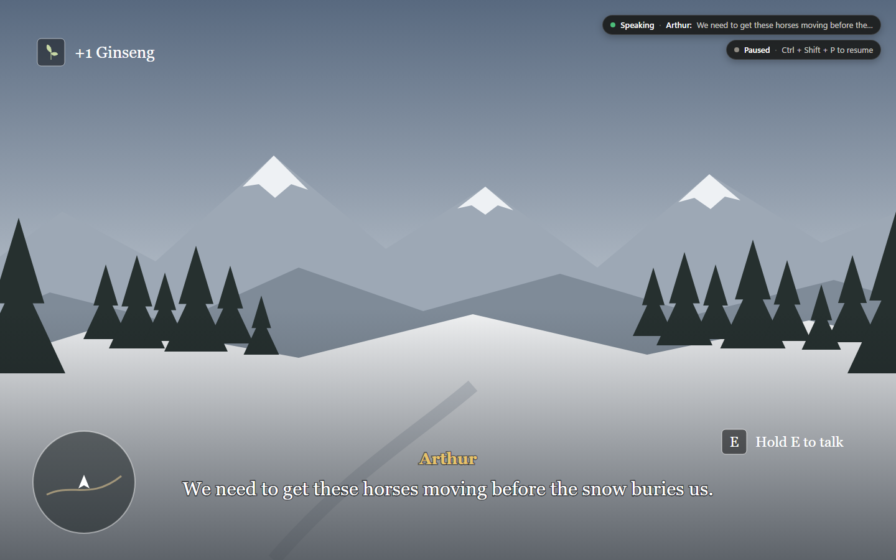
In-game overlay13-overlay.html